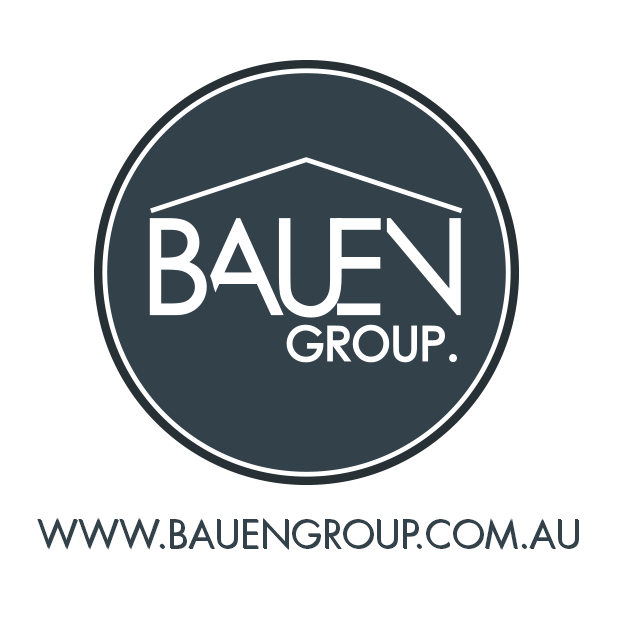

Bauen Group is the consolidated business services entity of a number of companies owned in part or full by Suzanne or Paul Commerford.
These include:
As business interests have grown, becoming more numerous and complex, the strategic decision was made to stop working as six, separate small businesses. Instead we are consolidating, allowing team members to specialise, creating efficiencies of scale and reducing risk.
It's also more fun to work in a dynamic team that can share the load and the lessons ensuring all of our businesses benefit from the collective effort, intelligence, resilience and experience of our individual team members.
Bauen Group includes:
We hope to keep you informed and engaged as these changes are made and if you have any questions or concerns please contact suzanne@bauengroup.com.au
Kind regards,
Paul and Suzanne Commerford